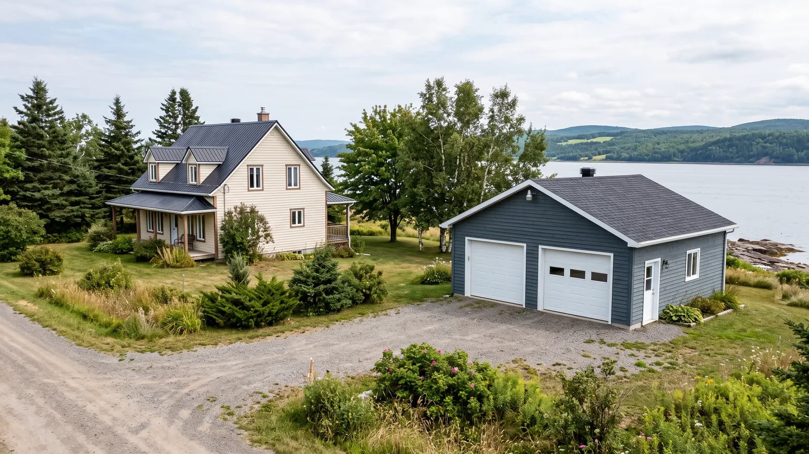
regions · bas-saint-laurentGarage détaché sobre près d'une maison du Bas-Saint-Laurent, terrain résidentiel et végétation maritime discrète. Photographie immobilière documentaire haut de gamme, réaliste, garage résidentiel québécois cohérent avec la maison, proportions architecturales crédibles, lumière naturelle, composition horizontale 16:9, aucun texte lisible, aucun logo, aucune adresse, aucun monument reconnaissable, aucun personnage démesuré.
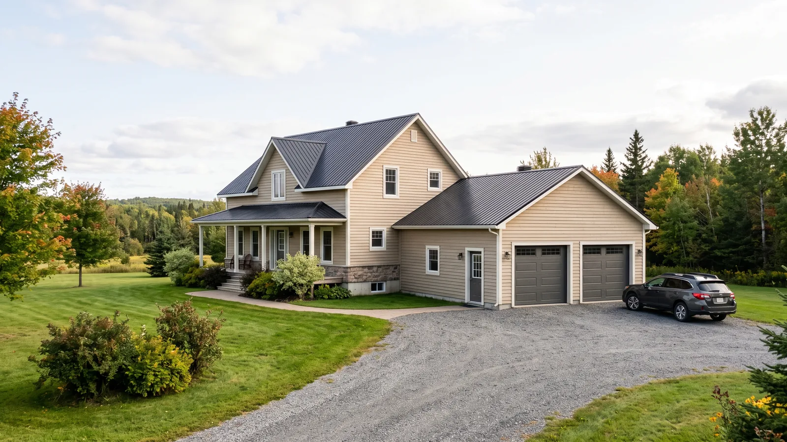
regions · saguenay-lac-saint-jeanGarage double isolé adjacent à une maison familiale du Saguenay–Lac-Saint-Jean, terrain spacieux. Photographie immobilière documentaire haut de gamme, réaliste, garage résidentiel québécois cohérent avec la maison, proportions architecturales crédibles, lumière naturelle, composition horizontale 16:9, aucun texte lisible, aucun logo, aucune adresse, aucun monument reconnaissable, aucun personnage démesuré.
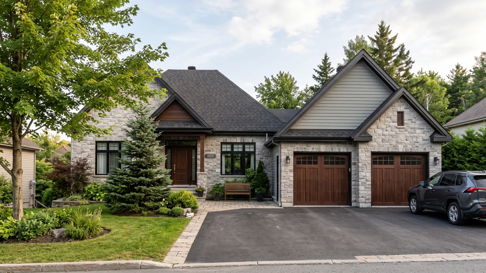
regions · capitale-nationaleGarage attaché bien intégré à une maison de la Capitale-Nationale, architecture locale sobre. Photographie immobilière documentaire haut de gamme, réaliste, garage résidentiel québécois cohérent avec la maison, proportions architecturales crédibles, lumière naturelle, composition horizontale 16:9, aucun texte lisible, aucun logo, aucune adresse, aucun monument reconnaissable, aucun personnage démesuré.
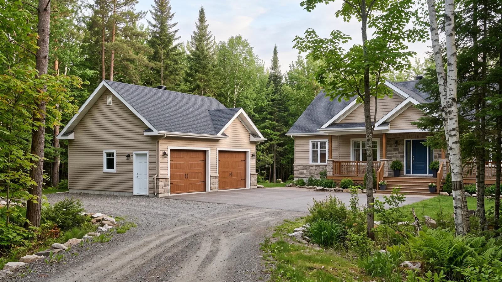
regions · mauricieGarage résidentiel en Mauricie dans un secteur boisé, revêtement assorti à la maison. Photographie immobilière documentaire haut de gamme, réaliste, garage résidentiel québécois cohérent avec la maison, proportions architecturales crédibles, lumière naturelle, composition horizontale 16:9, aucun texte lisible, aucun logo, aucune adresse, aucun monument reconnaissable, aucun personnage démesuré.
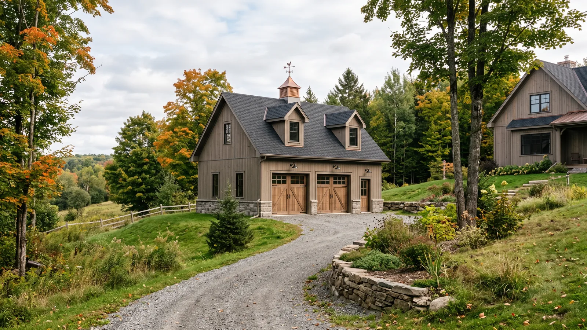
regions · estrieGarage détaché en Estrie sur terrain légèrement vallonné, portes et toiture bien proportionnées. Photographie immobilière documentaire haut de gamme, réaliste, garage résidentiel québécois cohérent avec la maison, proportions architecturales crédibles, lumière naturelle, composition horizontale 16:9, aucun texte lisible, aucun logo, aucune adresse, aucun monument reconnaissable, aucun personnage démesuré.
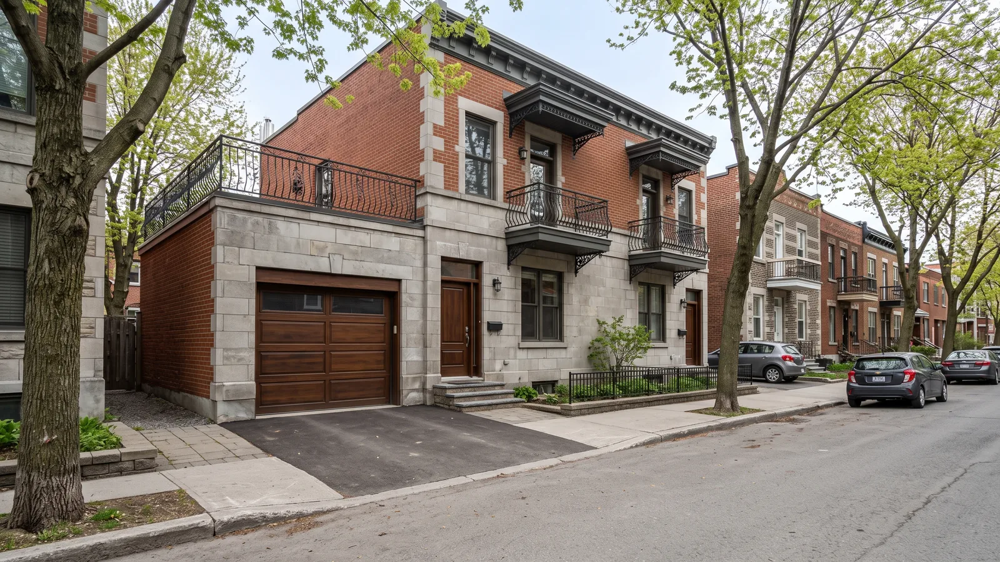
regions · montrealGarage urbain résidentiel montréalais intégré à un duplex ou une maison, rue calme sans adresse. Photographie immobilière documentaire haut de gamme, réaliste, garage résidentiel québécois cohérent avec la maison, proportions architecturales crédibles, lumière naturelle, composition horizontale 16:9, aucun texte lisible, aucun logo, aucune adresse, aucun monument reconnaissable, aucun personnage démesuré.
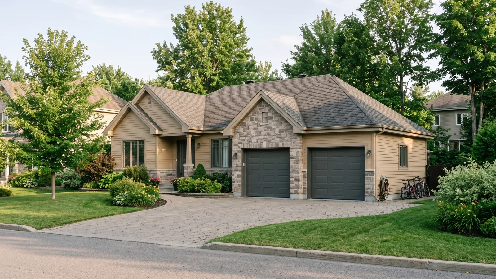
regions · outaouaisGarage attaché à une maison familiale en Outaouais, quartier verdoyant et entrée pavée. Photographie immobilière documentaire haut de gamme, réaliste, garage résidentiel québécois cohérent avec la maison, proportions architecturales crédibles, lumière naturelle, composition horizontale 16:9, aucun texte lisible, aucun logo, aucune adresse, aucun monument reconnaissable, aucun personnage démesuré.
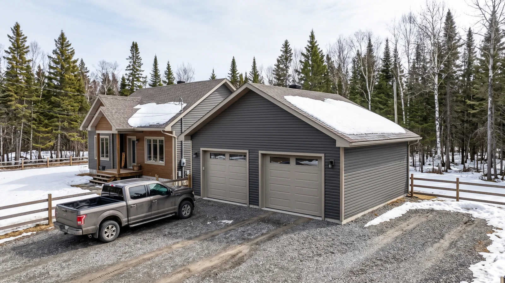
regions · abitibi-temiscamingueGarage résidentiel robuste en Abitibi-Témiscamingue, contexte nordique réaliste. Photographie immobilière documentaire haut de gamme, réaliste, garage résidentiel québécois cohérent avec la maison, proportions architecturales crédibles, lumière naturelle, composition horizontale 16:9, aucun texte lisible, aucun logo, aucune adresse, aucun monument reconnaissable, aucun personnage démesuré.
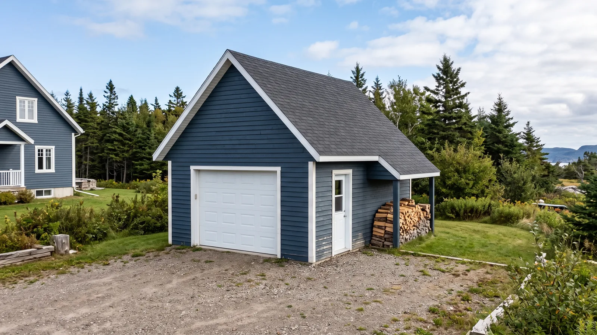
regions · cote-nordGarage simple avec toiture en pente sur la Côte-Nord, contexte résidentiel boréal. Photographie immobilière documentaire haut de gamme, réaliste, garage résidentiel québécois cohérent avec la maison, proportions architecturales crédibles, lumière naturelle, composition horizontale 16:9, aucun texte lisible, aucun logo, aucune adresse, aucun monument reconnaissable, aucun personnage démesuré.
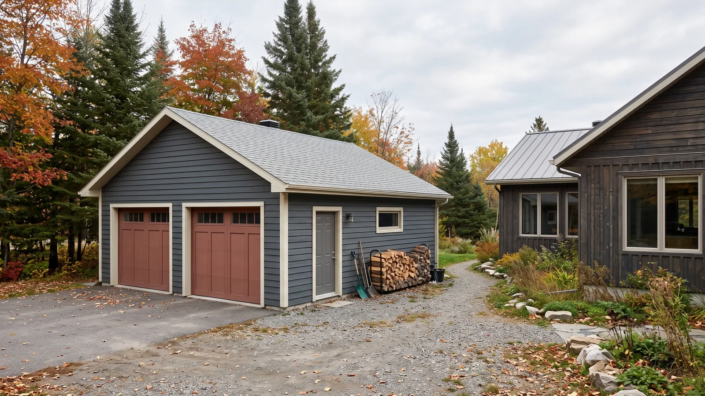
regions · nord-du-quebecGarage isolé fonctionnel près d'une maison nordique, construction simple et crédible. Photographie immobilière documentaire haut de gamme, réaliste, garage résidentiel québécois cohérent avec la maison, proportions architecturales crédibles, lumière naturelle, composition horizontale 16:9, aucun texte lisible, aucun logo, aucune adresse, aucun monument reconnaissable, aucun personnage démesuré.
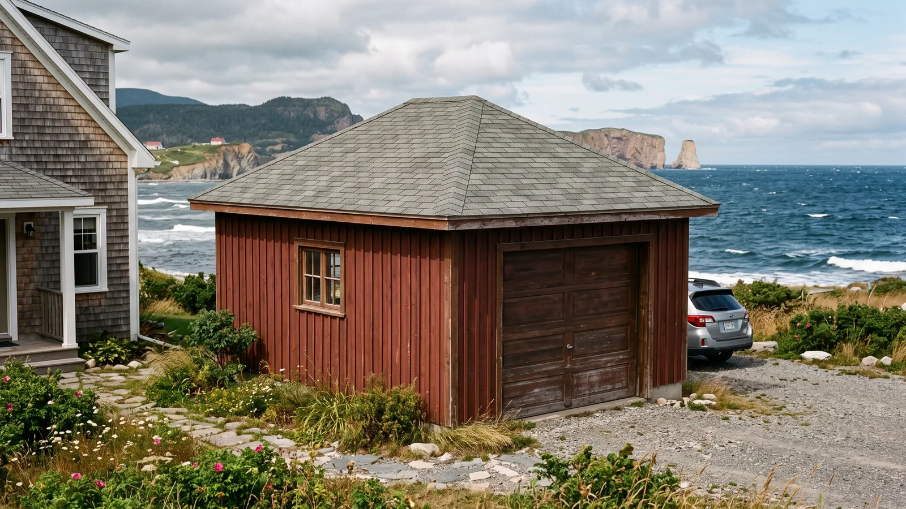
regions · gaspesie-iles-de-la-madeleineGarage résidentiel gaspésien compact, toiture adaptée au vent et contexte côtier discret. Photographie immobilière documentaire haut de gamme, réaliste, garage résidentiel québécois cohérent avec la maison, proportions architecturales crédibles, lumière naturelle, composition horizontale 16:9, aucun texte lisible, aucun logo, aucune adresse, aucun monument reconnaissable, aucun personnage démesuré.
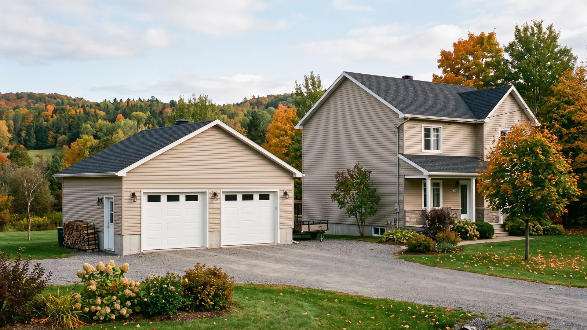
regions · chaudiere-appalachesGarage double près d'une maison familiale en Chaudière-Appalaches, relief doux. Photographie immobilière documentaire haut de gamme, réaliste, garage résidentiel québécois cohérent avec la maison, proportions architecturales crédibles, lumière naturelle, composition horizontale 16:9, aucun texte lisible, aucun logo, aucune adresse, aucun monument reconnaissable, aucun personnage démesuré.
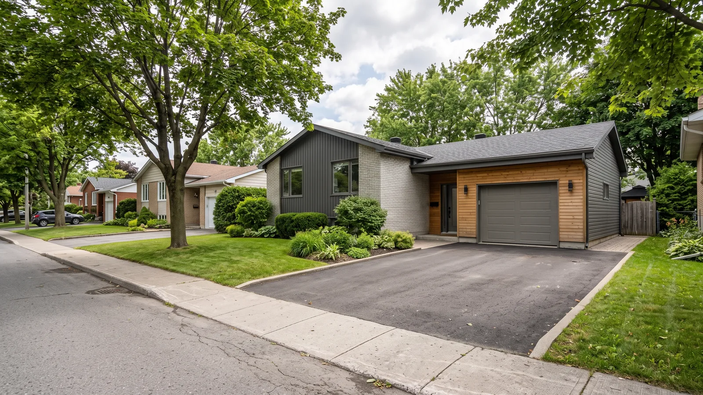
regions · lavalGarage attaché contemporain à Laval, terrain compact et rue mature. Photographie immobilière documentaire haut de gamme, réaliste, garage résidentiel québécois cohérent avec la maison, proportions architecturales crédibles, lumière naturelle, composition horizontale 16:9, aucun texte lisible, aucun logo, aucune adresse, aucun monument reconnaissable, aucun personnage démesuré.
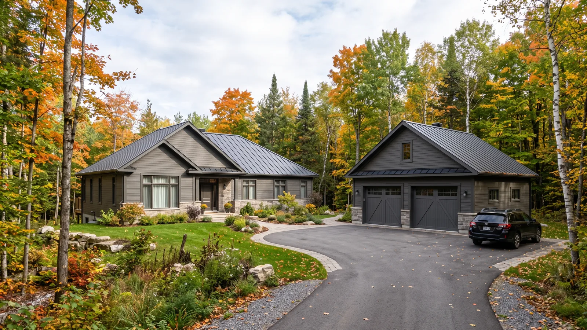
regions · lanaudiereGarage détaché dans Lanaudière, maison unifamiliale et environnement boisé. Photographie immobilière documentaire haut de gamme, réaliste, garage résidentiel québécois cohérent avec la maison, proportions architecturales crédibles, lumière naturelle, composition horizontale 16:9, aucun texte lisible, aucun logo, aucune adresse, aucun monument reconnaissable, aucun personnage démesuré.
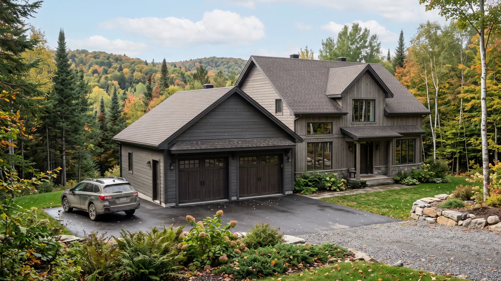
regions · laurentidesGarage double dans les Laurentides, maison familiale, relief discret et forêt en arrière-plan. Photographie immobilière documentaire haut de gamme, réaliste, garage résidentiel québécois cohérent avec la maison, proportions architecturales crédibles, lumière naturelle, composition horizontale 16:9, aucun texte lisible, aucun logo, aucune adresse, aucun monument reconnaissable, aucun personnage démesuré.
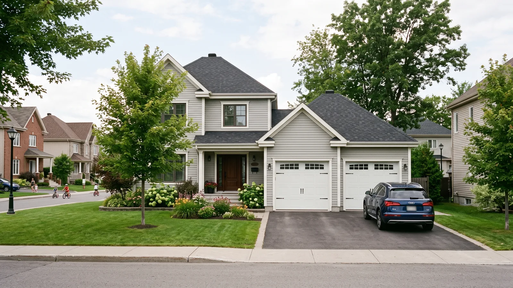
regions · monteregieGarage attaché à une propriété résidentielle en Montérégie, terrain plat et quartier familial. Photographie immobilière documentaire haut de gamme, réaliste, garage résidentiel québécois cohérent avec la maison, proportions architecturales crédibles, lumière naturelle, composition horizontale 16:9, aucun texte lisible, aucun logo, aucune adresse, aucun monument reconnaissable, aucun personnage démesuré.
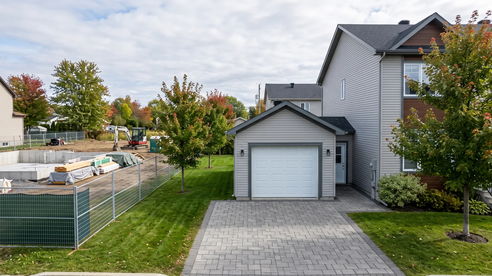
regions · centre-du-quebecGarage détaché au Centre-du-Québec, maison de ville moyenne et chantier propre. Photographie immobilière documentaire haut de gamme, réaliste, garage résidentiel québécois cohérent avec la maison, proportions architecturales crédibles, lumière naturelle, composition horizontale 16:9, aucun texte lisible, aucun logo, aucune adresse, aucun monument reconnaissable, aucun personnage démesuré.
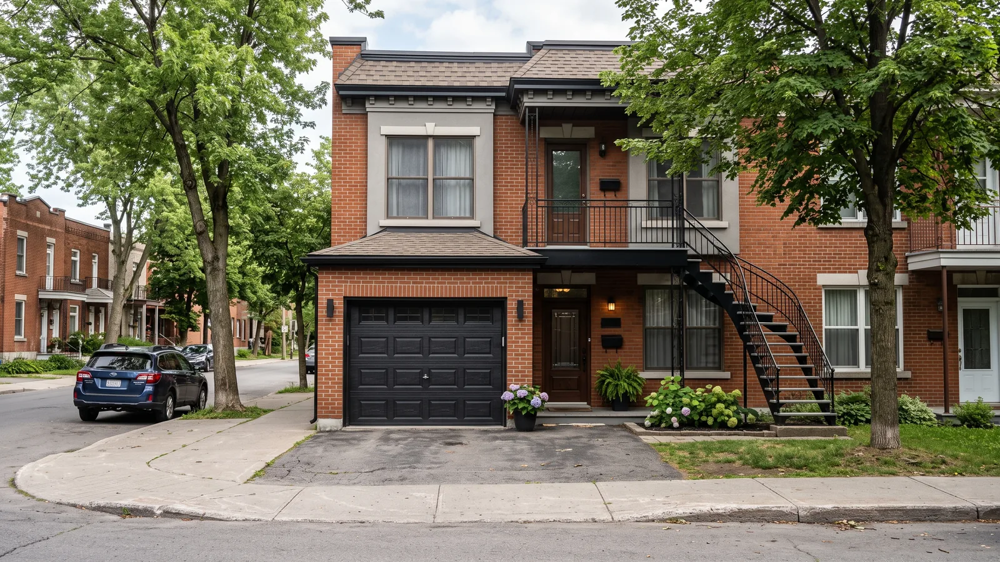
cities · montrealGarage urbain résidentiel intégré à une maison ou un duplex montréalais, rue calme sans adresse visible. Photographie immobilière documentaire haut de gamme, réaliste, garage résidentiel québécois cohérent avec la maison, proportions architecturales crédibles, lumière naturelle, composition horizontale 16:9, aucun texte lisible, aucun logo, aucune adresse, aucun monument reconnaissable, aucun personnage démesuré.
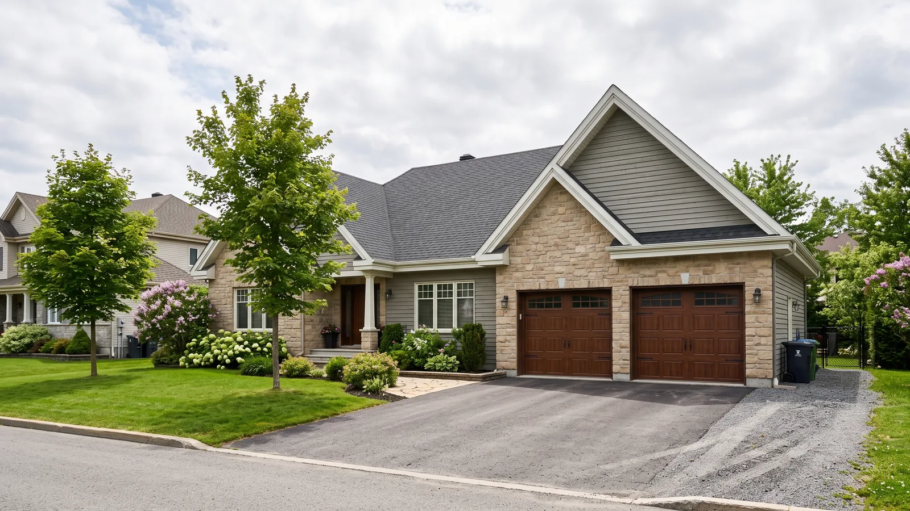
cities · quebecGarage attaché à une maison de Québec, architecture locale sobre sans monument. Photographie immobilière documentaire haut de gamme, réaliste, garage résidentiel québécois cohérent avec la maison, proportions architecturales crédibles, lumière naturelle, composition horizontale 16:9, aucun texte lisible, aucun logo, aucune adresse, aucun monument reconnaissable, aucun personnage démesuré.
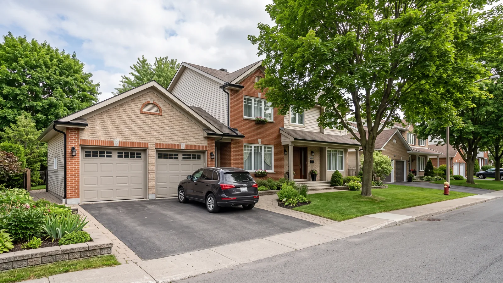
cities · lavalGarage double attaché à une maison unifamiliale de Laval, rue mature. Photographie immobilière documentaire haut de gamme, réaliste, garage résidentiel québécois cohérent avec la maison, proportions architecturales crédibles, lumière naturelle, composition horizontale 16:9, aucun texte lisible, aucun logo, aucune adresse, aucun monument reconnaissable, aucun personnage démesuré.
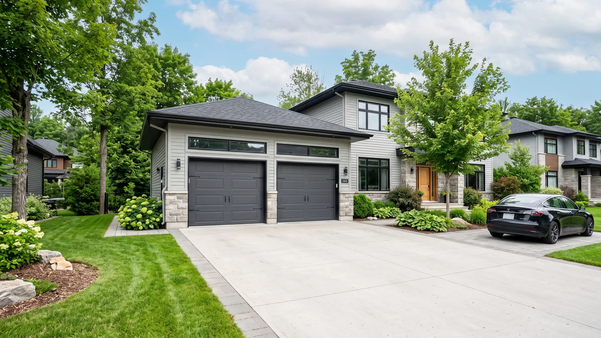
cities · gatineauGarage résidentiel moderne à Gatineau, quartier verdoyant et entrée propre. Photographie immobilière documentaire haut de gamme, réaliste, garage résidentiel québécois cohérent avec la maison, proportions architecturales crédibles, lumière naturelle, composition horizontale 16:9, aucun texte lisible, aucun logo, aucune adresse, aucun monument reconnaissable, aucun personnage démesuré.
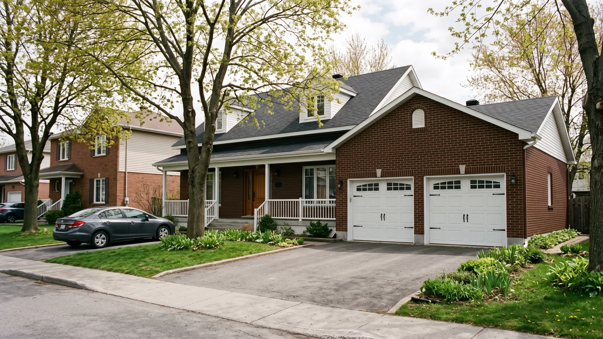
cities · longueuilGarage isolé ou attaché d'une maison de Longueuil, contexte réaliste de la Rive-Sud. Photographie immobilière documentaire haut de gamme, réaliste, garage résidentiel québécois cohérent avec la maison, proportions architecturales crédibles, lumière naturelle, composition horizontale 16:9, aucun texte lisible, aucun logo, aucune adresse, aucun monument reconnaissable, aucun personnage démesuré.
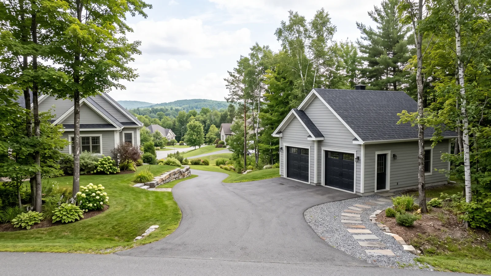
cities · sherbrookeGarage détaché à Sherbrooke sur terrain légèrement vallonné. Photographie immobilière documentaire haut de gamme, réaliste, garage résidentiel québécois cohérent avec la maison, proportions architecturales crédibles, lumière naturelle, composition horizontale 16:9, aucun texte lisible, aucun logo, aucune adresse, aucun monument reconnaissable, aucun personnage démesuré.
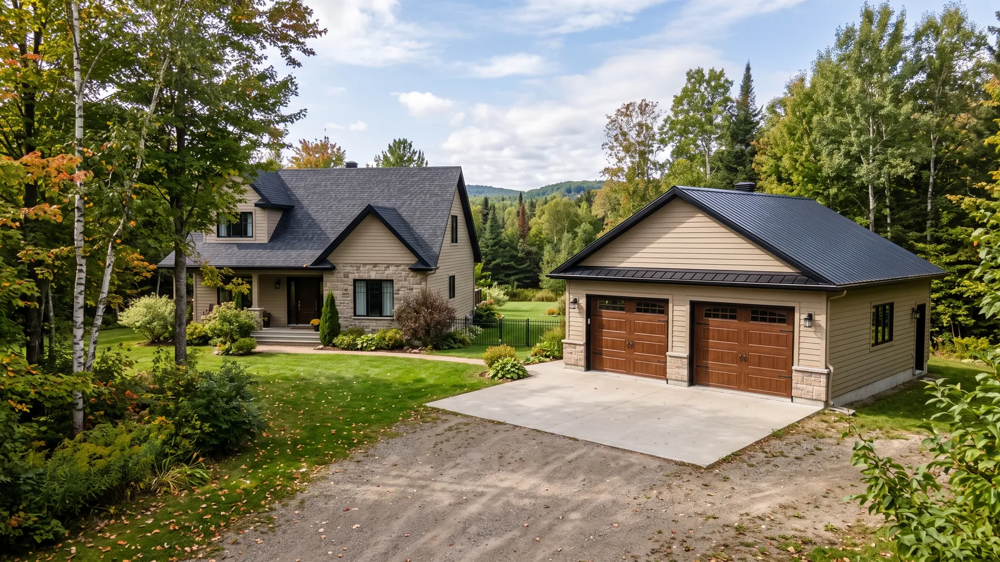
cities · saguenayGarage double robuste près d'une maison familiale à Saguenay, terrain spacieux. Photographie immobilière documentaire haut de gamme, réaliste, garage résidentiel québécois cohérent avec la maison, proportions architecturales crédibles, lumière naturelle, composition horizontale 16:9, aucun texte lisible, aucun logo, aucune adresse, aucun monument reconnaissable, aucun personnage démesuré.
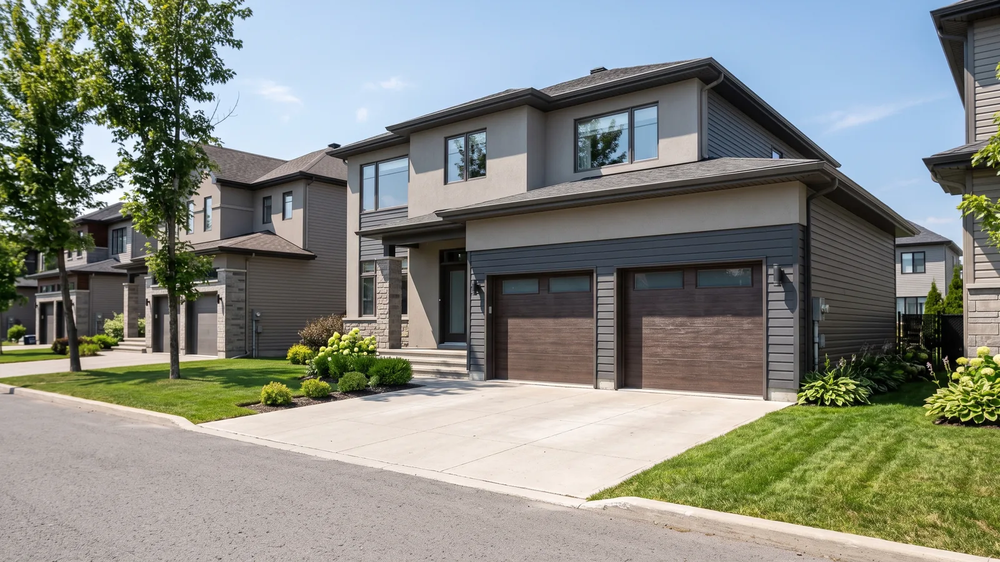
cities · levisGarage attaché récent à Lévis dans un développement résidentiel sobre. Photographie immobilière documentaire haut de gamme, réaliste, garage résidentiel québécois cohérent avec la maison, proportions architecturales crédibles, lumière naturelle, composition horizontale 16:9, aucun texte lisible, aucun logo, aucune adresse, aucun monument reconnaissable, aucun personnage démesuré.
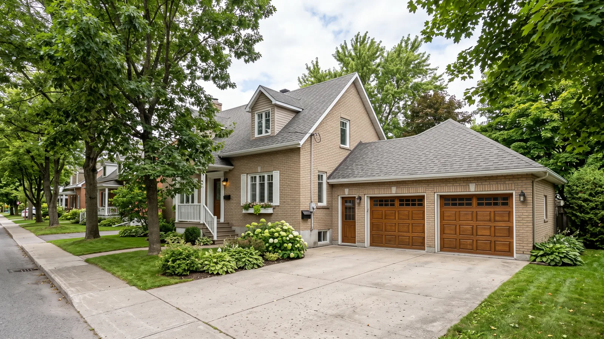
cities · trois-rivieresGarage résidentiel à Trois-Rivières, maison québécoise et quartier mature. Photographie immobilière documentaire haut de gamme, réaliste, garage résidentiel québécois cohérent avec la maison, proportions architecturales crédibles, lumière naturelle, composition horizontale 16:9, aucun texte lisible, aucun logo, aucune adresse, aucun monument reconnaissable, aucun personnage démesuré.
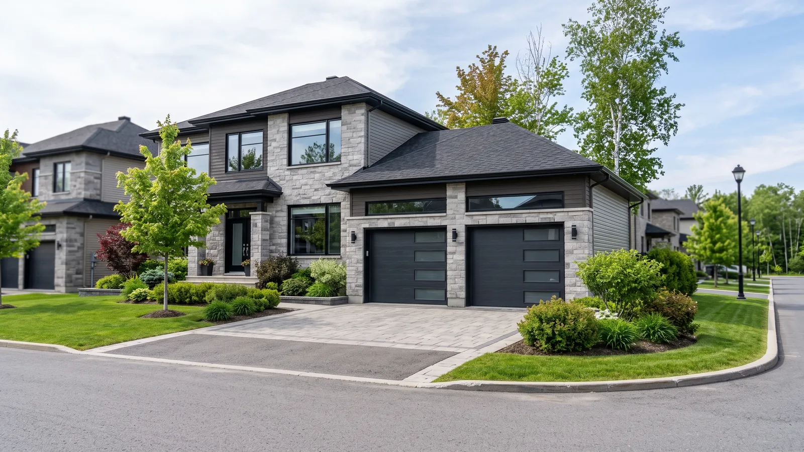
cities · terrebonneGarage double attaché à une maison récente de Terrebonne, banlieue soignée. Photographie immobilière documentaire haut de gamme, réaliste, garage résidentiel québécois cohérent avec la maison, proportions architecturales crédibles, lumière naturelle, composition horizontale 16:9, aucun texte lisible, aucun logo, aucune adresse, aucun monument reconnaissable, aucun personnage démesuré.
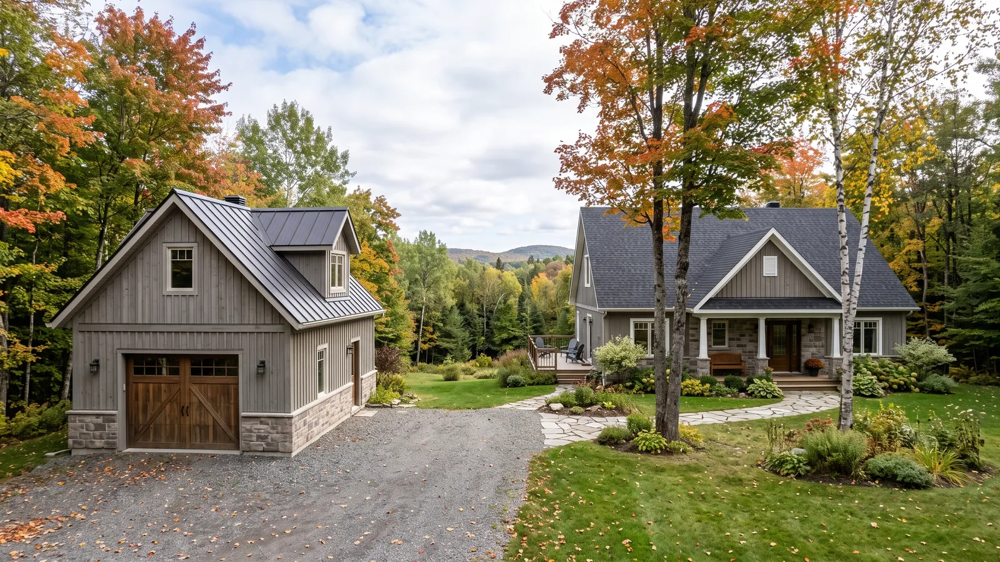
cities · saint-jeromeGarage détaché à Saint-Jérôme, maison familiale et contexte des Laurentides. Photographie immobilière documentaire haut de gamme, réaliste, garage résidentiel québécois cohérent avec la maison, proportions architecturales crédibles, lumière naturelle, composition horizontale 16:9, aucun texte lisible, aucun logo, aucune adresse, aucun monument reconnaissable, aucun personnage démesuré.
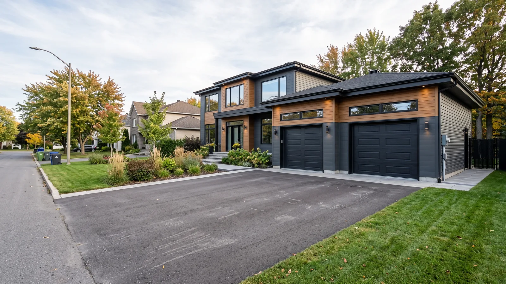
cities · mirabelGrand garage résidentiel à Mirabel, terrain semi-urbain et maison récente. Photographie immobilière documentaire haut de gamme, réaliste, garage résidentiel québécois cohérent avec la maison, proportions architecturales crédibles, lumière naturelle, composition horizontale 16:9, aucun texte lisible, aucun logo, aucune adresse, aucun monument reconnaissable, aucun personnage démesuré.
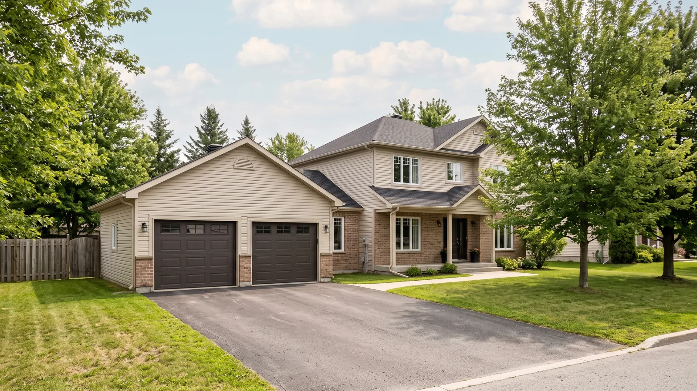
cities · saint-lin-laurentidesGarage double à Saint-Lin–Laurentides, maison unifamiliale et terrain familial. Photographie immobilière documentaire haut de gamme, réaliste, garage résidentiel québécois cohérent avec la maison, proportions architecturales crédibles, lumière naturelle, composition horizontale 16:9, aucun texte lisible, aucun logo, aucune adresse, aucun monument reconnaissable, aucun personnage démesuré.
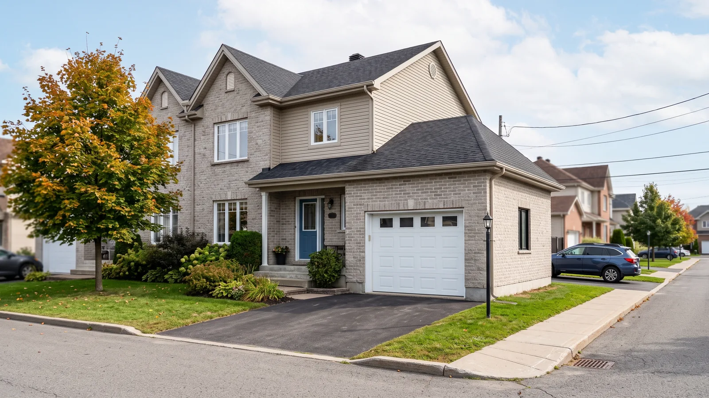
cities · drummondvilleGarage attaché à Drummondville, maison familiale de ville moyenne. Photographie immobilière documentaire haut de gamme, réaliste, garage résidentiel québécois cohérent avec la maison, proportions architecturales crédibles, lumière naturelle, composition horizontale 16:9, aucun texte lisible, aucun logo, aucune adresse, aucun monument reconnaissable, aucun personnage démesuré.
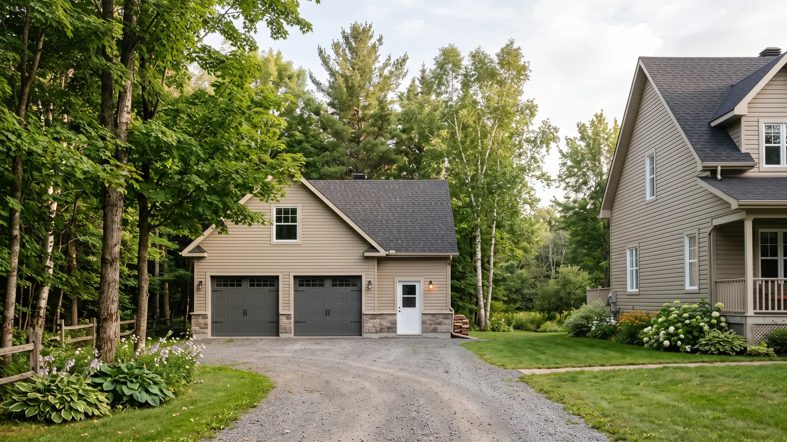
cities · granbyGarage détaché à Granby, terrain arboré et proportions résidentielles. Photographie immobilière documentaire haut de gamme, réaliste, garage résidentiel québécois cohérent avec la maison, proportions architecturales crédibles, lumière naturelle, composition horizontale 16:9, aucun texte lisible, aucun logo, aucune adresse, aucun monument reconnaissable, aucun personnage démesuré.
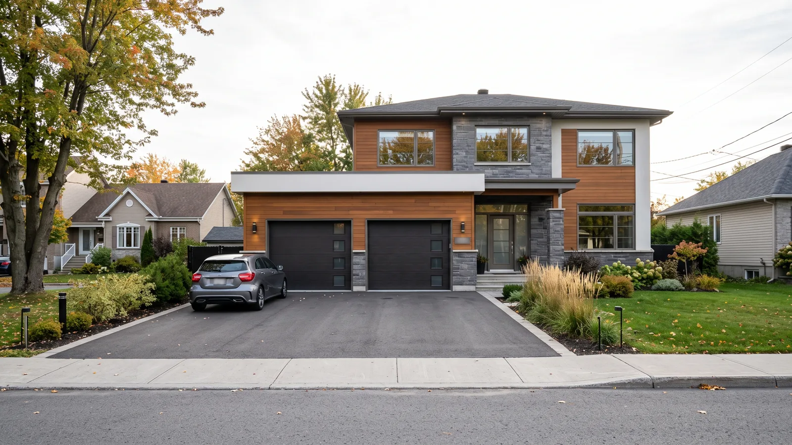
cities · blainvilleGarage double contemporain à Blainville, rue résidentielle calme. Photographie immobilière documentaire haut de gamme, réaliste, garage résidentiel québécois cohérent avec la maison, proportions architecturales crédibles, lumière naturelle, composition horizontale 16:9, aucun texte lisible, aucun logo, aucune adresse, aucun monument reconnaissable, aucun personnage démesuré.
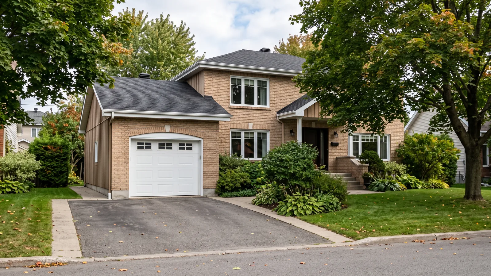
cities · repentignyGarage attaché à une maison mature de Repentigny, aménagement sobre. Photographie immobilière documentaire haut de gamme, réaliste, garage résidentiel québécois cohérent avec la maison, proportions architecturales crédibles, lumière naturelle, composition horizontale 16:9, aucun texte lisible, aucun logo, aucune adresse, aucun monument reconnaissable, aucun personnage démesuré.
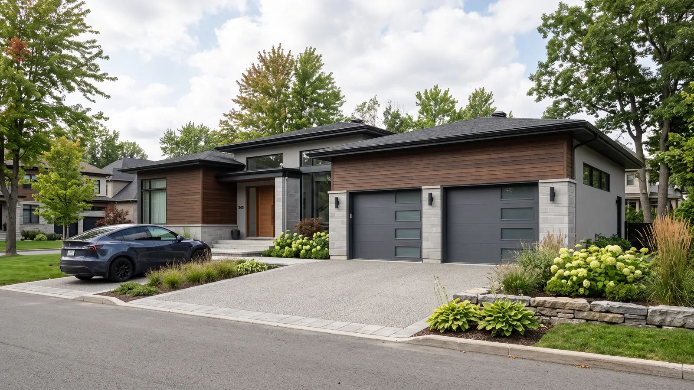
cities · mascoucheGarage résidentiel moderne à Mascouche avec terrain paysagé discret. Photographie immobilière documentaire haut de gamme, réaliste, garage résidentiel québécois cohérent avec la maison, proportions architecturales crédibles, lumière naturelle, composition horizontale 16:9, aucun texte lisible, aucun logo, aucune adresse, aucun monument reconnaissable, aucun personnage démesuré.
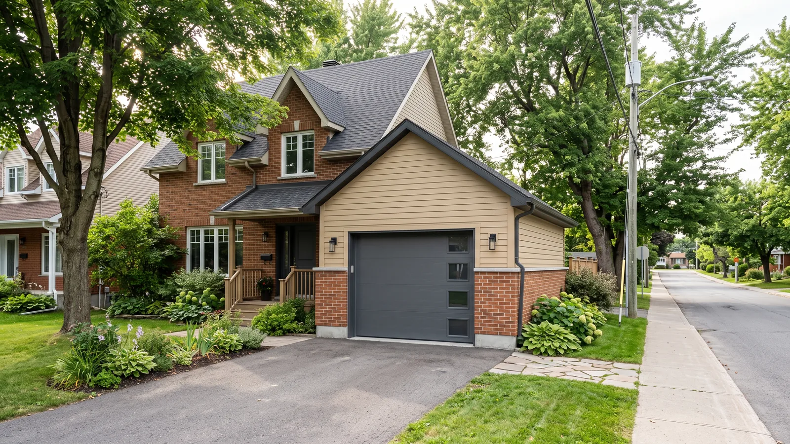
cities · saint-eustacheGarage rénové à Saint-Eustache, maison mature et arbres de rue. Photographie immobilière documentaire haut de gamme, réaliste, garage résidentiel québécois cohérent avec la maison, proportions architecturales crédibles, lumière naturelle, composition horizontale 16:9, aucun texte lisible, aucun logo, aucune adresse, aucun monument reconnaissable, aucun personnage démesuré.
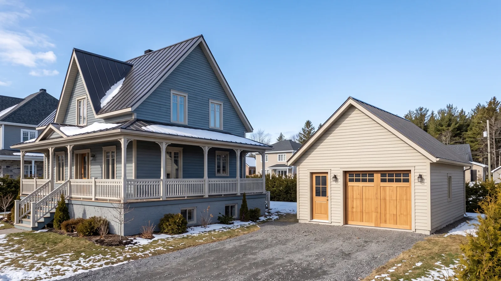
pool · garage-01Garage simple détaché nouvellement construit près d'une maison québécoise. Photographie immobilière documentaire haut de gamme, réaliste, garage résidentiel québécois cohérent avec la maison, proportions architecturales crédibles, lumière naturelle, composition horizontale 16:9, aucun texte lisible, aucun logo, aucune adresse, aucun monument reconnaissable, aucun personnage démesuré.
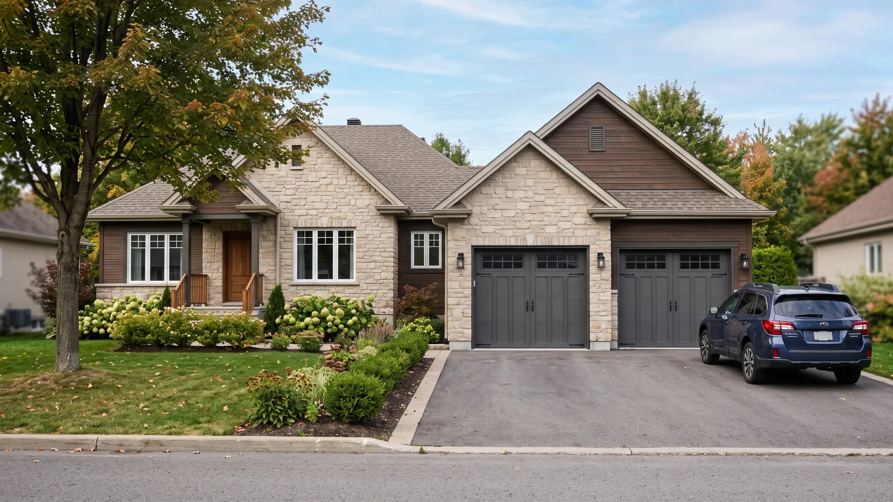
pool · garage-02Garage double attaché avec revêtement assorti à la maison. Photographie immobilière documentaire haut de gamme, réaliste, garage résidentiel québécois cohérent avec la maison, proportions architecturales crédibles, lumière naturelle, composition horizontale 16:9, aucun texte lisible, aucun logo, aucune adresse, aucun monument reconnaissable, aucun personnage démesuré.
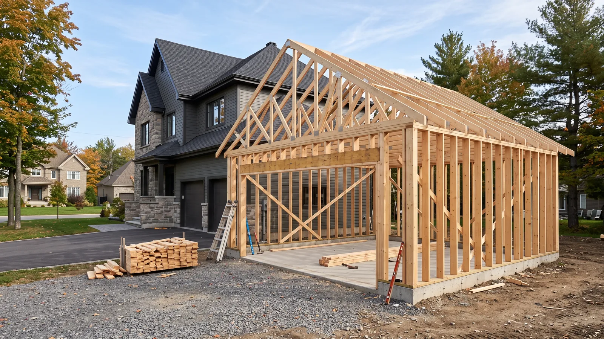
pool · garage-03Charpente en bois d'un garage résidentiel en construction, chantier propre. Photographie immobilière documentaire haut de gamme, réaliste, garage résidentiel québécois cohérent avec la maison, proportions architecturales crédibles, lumière naturelle, composition horizontale 16:9, aucun texte lisible, aucun logo, aucune adresse, aucun monument reconnaissable, aucun personnage démesuré.
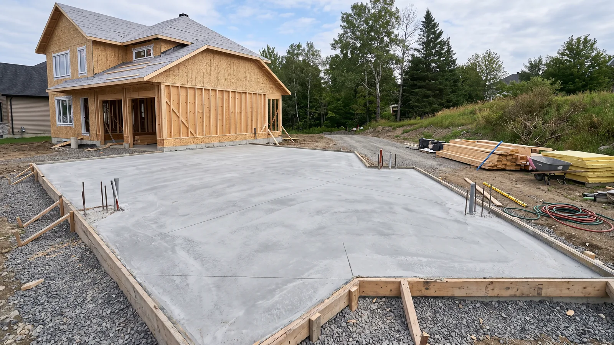
pool · garage-04Dalle de garage résidentielle préparée avant la construction des murs. Photographie immobilière documentaire haut de gamme, réaliste, garage résidentiel québécois cohérent avec la maison, proportions architecturales crédibles, lumière naturelle, composition horizontale 16:9, aucun texte lisible, aucun logo, aucune adresse, aucun monument reconnaissable, aucun personnage démesuré.
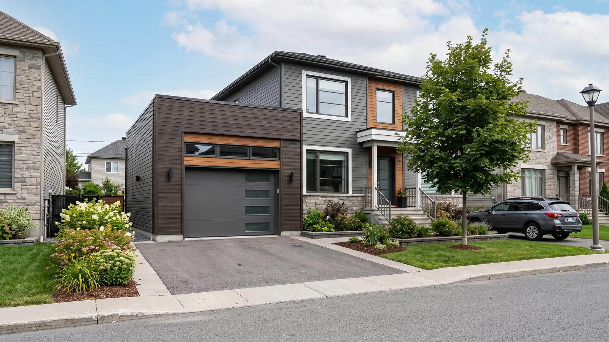
pool · garage-05Porte de garage moderne installée sur une façade résidentielle sobre. Photographie immobilière documentaire haut de gamme, réaliste, garage résidentiel québécois cohérent avec la maison, proportions architecturales crédibles, lumière naturelle, composition horizontale 16:9, aucun texte lisible, aucun logo, aucune adresse, aucun monument reconnaissable, aucun personnage démesuré.
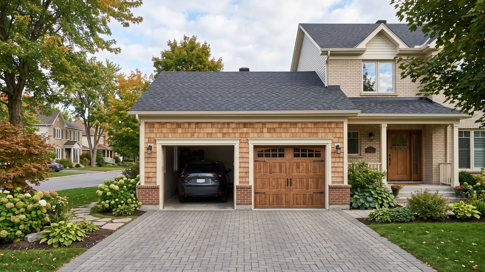
pool · garage-06Garage ancien rénové avec revêtement et toiture remis à neuf. Photographie immobilière documentaire haut de gamme, réaliste, garage résidentiel québécois cohérent avec la maison, proportions architecturales crédibles, lumière naturelle, composition horizontale 16:9, aucun texte lisible, aucun logo, aucune adresse, aucun monument reconnaissable, aucun personnage démesuré.
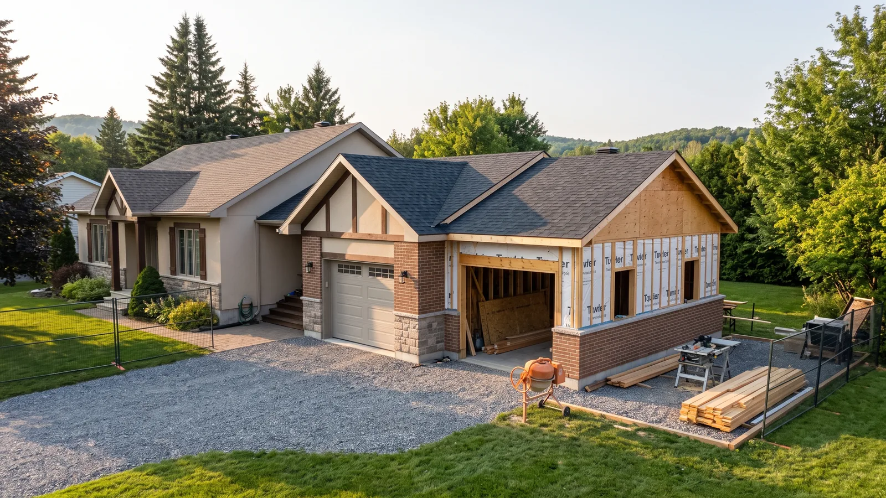
pool · garage-07Agrandissement latéral d'un garage attaché, chantier résidentiel ordonné. Photographie immobilière documentaire haut de gamme, réaliste, garage résidentiel québécois cohérent avec la maison, proportions architecturales crédibles, lumière naturelle, composition horizontale 16:9, aucun texte lisible, aucun logo, aucune adresse, aucun monument reconnaissable, aucun personnage démesuré.
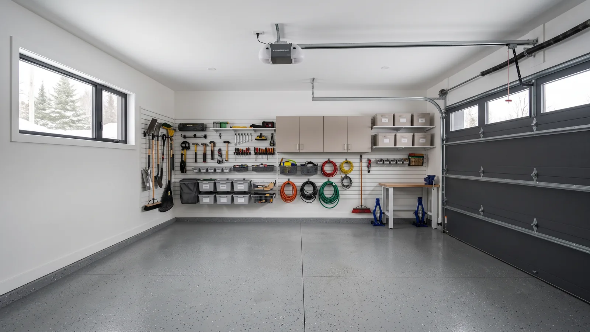
pool · garage-08Intérieur propre d'un garage isolé avec rangement mural sans marques visibles. Photographie immobilière documentaire haut de gamme, réaliste, garage résidentiel québécois cohérent avec la maison, proportions architecturales crédibles, lumière naturelle, composition horizontale 16:9, aucun texte lisible, aucun logo, aucune adresse, aucun monument reconnaissable, aucun personnage démesuré.
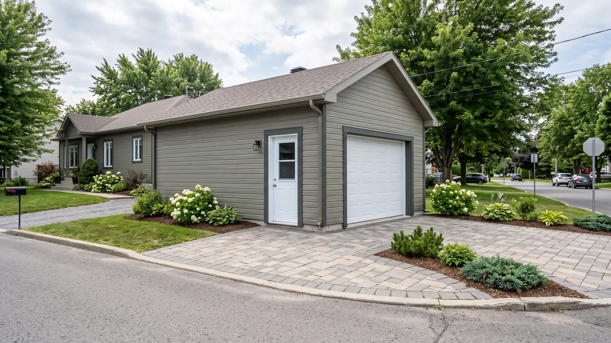
pool · garage-09Garage détaché avec petite allée pavée et aménagement paysager simple. Photographie immobilière documentaire haut de gamme, réaliste, garage résidentiel québécois cohérent avec la maison, proportions architecturales crédibles, lumière naturelle, composition horizontale 16:9, aucun texte lisible, aucun logo, aucune adresse, aucun monument reconnaissable, aucun personnage démesuré.
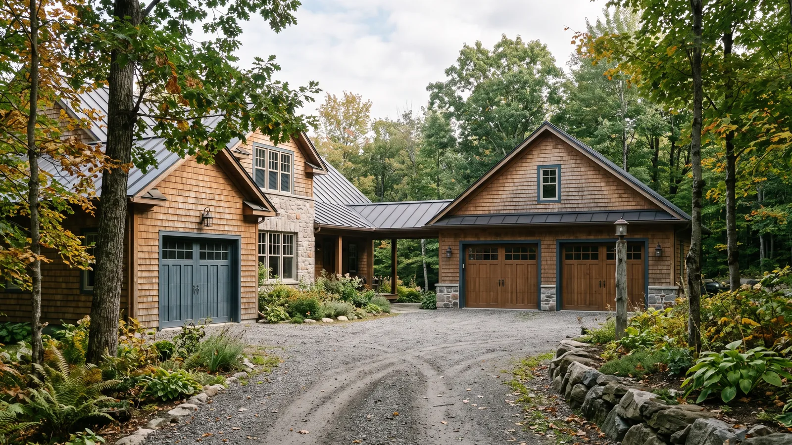
pool · garage-10Deux volumes de garage résidentiel, simple et double, dans une composition architecturale naturelle. Photographie immobilière documentaire haut de gamme, réaliste, garage résidentiel québécois cohérent avec la maison, proportions architecturales crédibles, lumière naturelle, composition horizontale 16:9, aucun texte lisible, aucun logo, aucune adresse, aucun monument reconnaissable, aucun personnage démesuré.
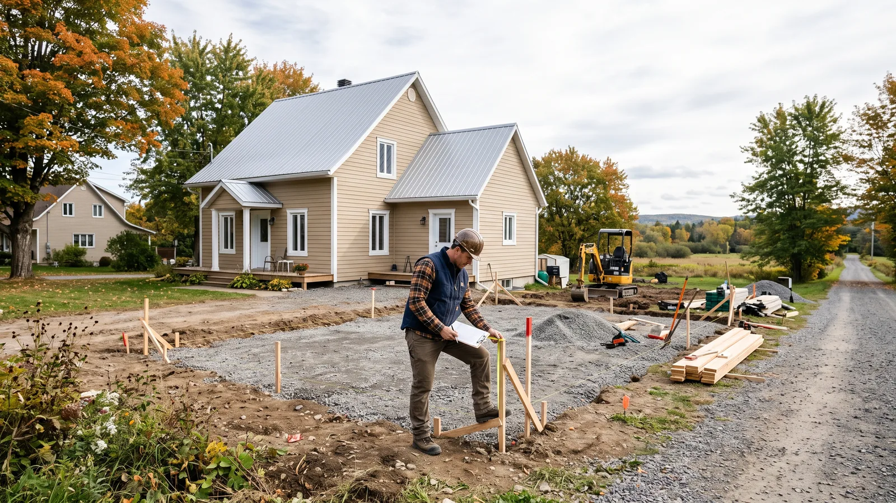
pool · garage-11Entrepreneur prenant des mesures devant l'emplacement d'un futur garage, plan large. Photographie immobilière documentaire haut de gamme, réaliste, garage résidentiel québécois cohérent avec la maison, proportions architecturales crédibles, lumière naturelle, composition horizontale 16:9, aucun texte lisible, aucun logo, aucune adresse, aucun monument reconnaissable, aucun personnage démesuré.
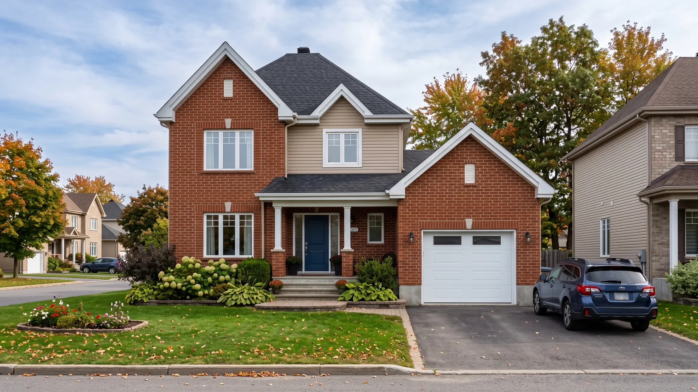
pool · garage-12Garage attaché en brique intégré à une maison de banlieue québécoise. Photographie immobilière documentaire haut de gamme, réaliste, garage résidentiel québécois cohérent avec la maison, proportions architecturales crédibles, lumière naturelle, composition horizontale 16:9, aucun texte lisible, aucun logo, aucune adresse, aucun monument reconnaissable, aucun personnage démesuré.
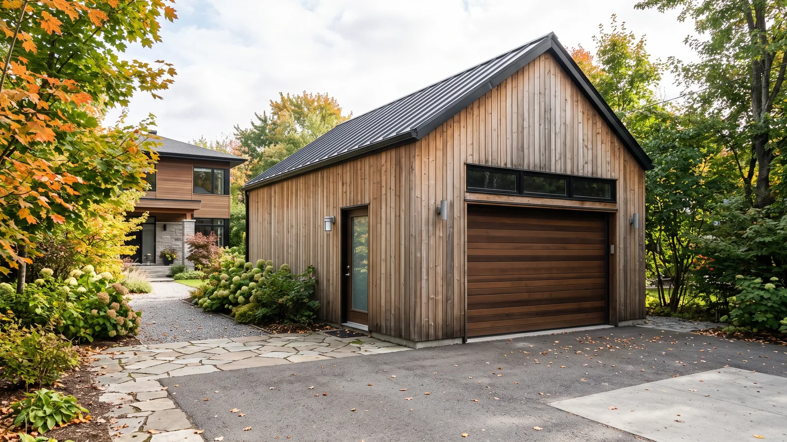
pool · garage-13Garage détaché en revêtement de bois moderne, proportions résidentielles. Photographie immobilière documentaire haut de gamme, réaliste, garage résidentiel québécois cohérent avec la maison, proportions architecturales crédibles, lumière naturelle, composition horizontale 16:9, aucun texte lisible, aucun logo, aucune adresse, aucun monument reconnaissable, aucun personnage démesuré.
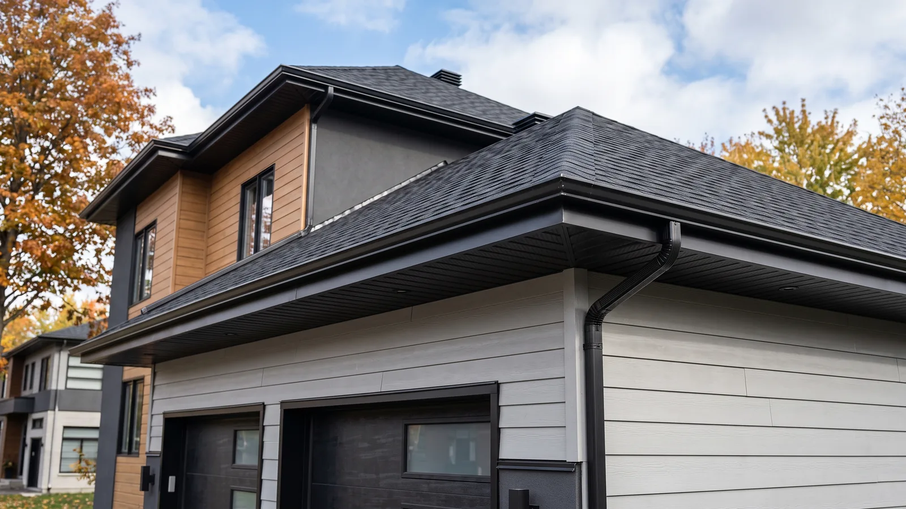
pool · garage-14Toiture et soffites d'un garage neuf, détails constructifs cohérents. Photographie immobilière documentaire haut de gamme, réaliste, garage résidentiel québécois cohérent avec la maison, proportions architecturales crédibles, lumière naturelle, composition horizontale 16:9, aucun texte lisible, aucun logo, aucune adresse, aucun monument reconnaissable, aucun personnage démesuré.
pool · garage-15Fond de cour avec garage résidentiel compact et arbres matures. Photographie immobilière documentaire haut de gamme, réaliste, garage résidentiel québécois cohérent avec la maison, proportions architecturales crédibles, lumière naturelle, composition horizontale 16:9, aucun texte lisible, aucun logo, aucune adresse, aucun monument reconnaissable, aucun personnage démesuré.
pool · garage-16Garage simple transformé en atelier résidentiel propre, aucune activité commerciale. Photographie immobilière documentaire haut de gamme, réaliste, garage résidentiel québécois cohérent avec la maison, proportions architecturales crédibles, lumière naturelle, composition horizontale 16:9, aucun texte lisible, aucun logo, aucune adresse, aucun monument reconnaissable, aucun personnage démesuré.
pool · garage-17Garage double sur terrain semi-rural avec maison visible en arrière-plan. Photographie immobilière documentaire haut de gamme, réaliste, garage résidentiel québécois cohérent avec la maison, proportions architecturales crédibles, lumière naturelle, composition horizontale 16:9, aucun texte lisible, aucun logo, aucune adresse, aucun monument reconnaissable, aucun personnage démesuré.
pool · garage-18Pose du revêtement extérieur sur un garage neuf, travailleur à taille réaliste. Photographie immobilière documentaire haut de gamme, réaliste, garage résidentiel québécois cohérent avec la maison, proportions architecturales crédibles, lumière naturelle, composition horizontale 16:9, aucun texte lisible, aucun logo, aucune adresse, aucun monument reconnaissable, aucun personnage démesuré.
pool · garage-19Vue large d'un garage attaché et de son accès depuis la rue. Photographie immobilière documentaire haut de gamme, réaliste, garage résidentiel québécois cohérent avec la maison, proportions architecturales crédibles, lumière naturelle, composition horizontale 16:9, aucun texte lisible, aucun logo, aucune adresse, aucun monument reconnaissable, aucun personnage démesuré.
pool · garage-20Garage chauffé résidentiel fermé, porte et enveloppe bien finies. Photographie immobilière documentaire haut de gamme, réaliste, garage résidentiel québécois cohérent avec la maison, proportions architecturales crédibles, lumière naturelle, composition horizontale 16:9, aucun texte lisible, aucun logo, aucune adresse, aucun monument reconnaissable, aucun personnage démesuré.
pool · garage-21Garage en construction au printemps dans un quartier résidentiel québécois. Photographie immobilière documentaire haut de gamme, réaliste, garage résidentiel québécois cohérent avec la maison, proportions architecturales crédibles, lumière naturelle, composition horizontale 16:9, aucun texte lisible, aucun logo, aucune adresse, aucun monument reconnaissable, aucun personnage démesuré.
pool · garage-22Garage achevé en automne, maison familiale et couleurs naturelles. Photographie immobilière documentaire haut de gamme, réaliste, garage résidentiel québécois cohérent avec la maison, proportions architecturales crédibles, lumière naturelle, composition horizontale 16:9, aucun texte lisible, aucun logo, aucune adresse, aucun monument reconnaissable, aucun personnage démesuré.
pool · garage-23Garage résidentiel en hiver léger, neige naturelle et allée dégagée. Photographie immobilière documentaire haut de gamme, réaliste, garage résidentiel québécois cohérent avec la maison, proportions architecturales crédibles, lumière naturelle, composition horizontale 16:9, aucun texte lisible, aucun logo, aucune adresse, aucun monument reconnaissable, aucun personnage démesuré.
pool · garage-24Détail d'une jonction propre entre un garage attaché et la maison. Photographie immobilière documentaire haut de gamme, réaliste, garage résidentiel québécois cohérent avec la maison, proportions architecturales crédibles, lumière naturelle, composition horizontale 16:9, aucun texte lisible, aucun logo, aucune adresse, aucun monument reconnaissable, aucun personnage démesuré.
pool · garage-25Garage rénové avec nouvelle porte, fenêtre et revêtement coordonnés. Photographie immobilière documentaire haut de gamme, réaliste, garage résidentiel québécois cohérent avec la maison, proportions architecturales crédibles, lumière naturelle, composition horizontale 16:9, aucun texte lisible, aucun logo, aucune adresse, aucun monument reconnaissable, aucun personnage démesuré.